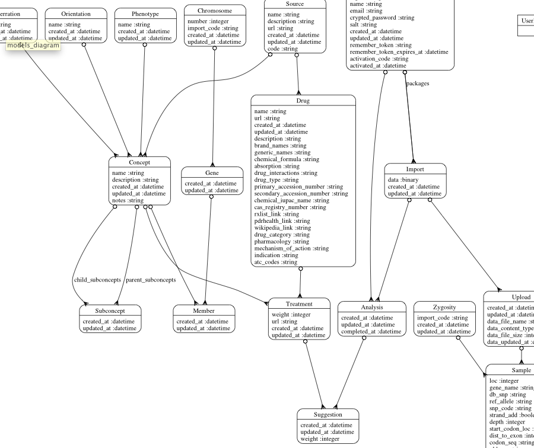
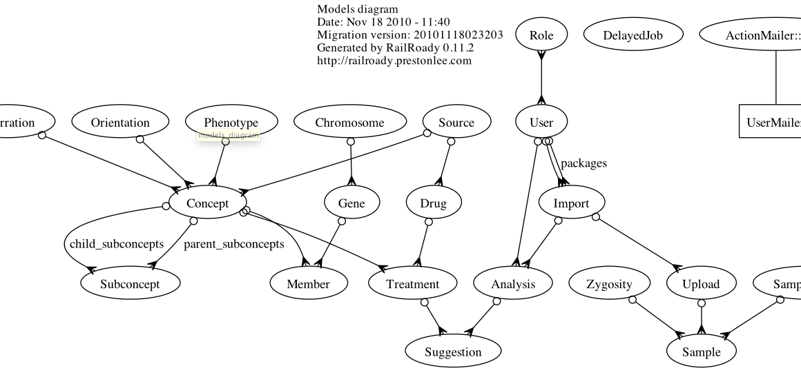
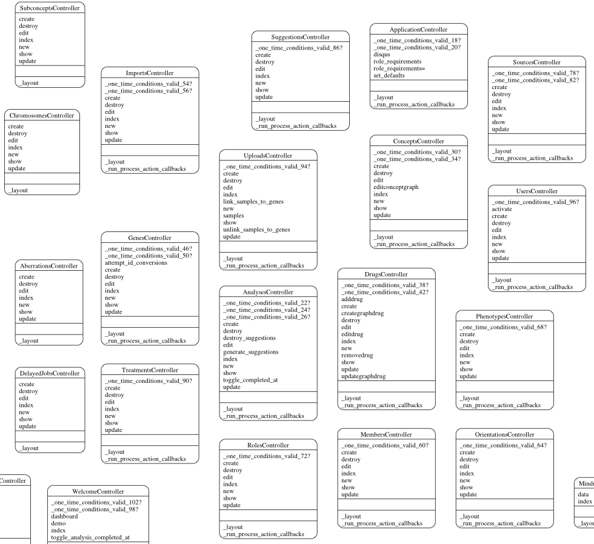

Features
-
Trivial to integrate
Simple to install and run. -
Dynamic
Reverse engineer your existing source code. No more stupid Vizio diagrams that are perpetually outdated. -
Vector Graphics
Rake tasks generate scalable vector graphics (SVG) files, which can be scaled to any size without quality loss. View them in a web browser, or even print massive wall-size class diagrams with Adobe Illustrated -
F/OSS
Free and open GPL licensing. No fees. Ever. -
Cross platform
Runs on Linux and OS X. -
Raw DOT Support
Just want the diagram source code without the .SVG files? No problem! (See the gem README file.)
RailRoady is simple because it DOESN'T require..
-
Clicking anything
No more using OmniGraffle or Vizio for class diagram deliverables! Run the rake task, and out pop your diagrams. -
Configuration
Reasonable levels of detail provide for thorough diagrams that are not overwhelming to view and understand. -
Manual layout
Even complicated models are layed out in a space-efficient manner. No more manually drag-and-dropping boxes around the screen every time you add a class.